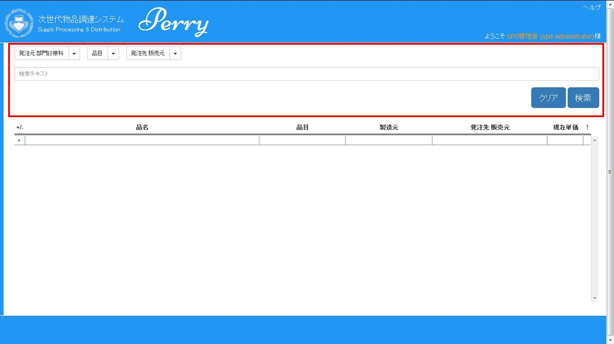
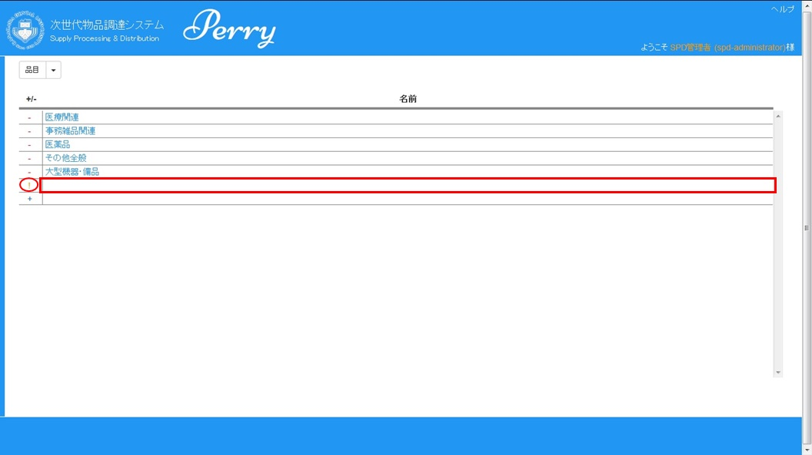

◇発注起案を確認します。
ナビゲーションエリアより「発注」の”一覧”をクリックします。
◇発注一覧画面が表示されます。
①検索エリア：初期値は、日付は表示された現在日付、状態は、”承認待ち”にチェックが入っています。日付と状態でデータの絞り込みが可能です。
②発注一覧表示エリア：”検索”をクリックされた場合、検索条件に合致した情報が表示されます。

◇検索エリアで表示条件を設定します。
①検索条件を設定して、”検索”をクリックします。検索条件に合致した情報が表示されます。
②”クリア”をクリックすると、検索条件が初期値になります。

①状態が”承認待ち”のレコードの”起案番号”をクリックします。

②内容を確認します。
・内容が宜しければ、”承認”をクリックします。確認メッセージが表示されますので、”OK"をクリックしてください。その後、発注一覧画面へ戻ります。
・内容が宜しくなければ、”否認”をクリックします。確認メッセージが表示されますので、”OK"をクリックしてください。その後、発注一覧画面へ戻ります。
・何もしない場合は、”戻る”をクリックします。発注一覧画面へ戻ります。

前のページに戻る
◇経費精算申請起案を確認します。
ナビゲーションエリアより「経費精算申請」の”一覧”をクリックします。

◇経費精算申請一覧画面が表示されます。
①検索エリア：初期値は、日付は表示された現在日付、状態は、”承認待ち”にチェックが入っています。日付と状態でデータの絞り込みが可能です。
②経費精算申請一覧表示エリア：”検索”をクリックされた場合、検索条件に合致した情報が表示されます。

◇検索エリアで表示条件を設定します。
①検索条件を設定して、”検索”をクリックします。検索条件に合致した情報が表示されます。
②”クリア”をクリックすると、検索条件が初期値になります。

①状態が”承認待ち”のレコードの”起案番号”をクリックします。
②内容を確認します。
・内容が宜しければ、”承認”をクリックします。確認メッセージが表示されますので、”OK"をクリックしてください。その後、経費精算申請一覧画面へ戻ります。
・内容が宜しくなければ、”コメント”、”備考・連絡”欄に却下理由を記述し、”却下”をクリックします。
確認メッセージが表示されますので、”OK"をクリックしてください。その後、経費精算申請一覧画面へ戻ります。
・何もしない場合は、”戻る”をクリックします。経費精算一覧画面へ戻ります。

前のページに戻る
◇ユーザの登録・変更・削除を行う。
ナビゲーションエリアより「システム管理」の”ユーザ”をクリックします。
◇ユーザ登録画面が表示されます。
①部門診療科を選択します。
②選択された部門診療科に所属するユーザが表示されます。
◇選択された部門診療科に登録されたユーザ一覧が表示されます。表示内容は”SPD”の例になります。
ユーザを新規に登録する。
一覧表の最終行左端の「＋」記号をクリックします。
◇ユーザ登録画面が表示されます。必要事項を入力します。
①「基本情報」の登録
・アカウント：kduメールアカウントを入力する。（xxxx@kdu.ac.jpのxxxx部分）
（注）kduメールを持っていない方は、先頭にx（アルファベットの小文字エックス）を付けその後に、自分の名前で登録すること。
・氏名：自分の名前を入力する。（例．神奈川太郎）
・暫定パスワード：8文字以上
・E-Mail：自分のkduメールアドレスを入力する。
（注）kduメールを持っていない方は、dummy@kdu.ac.jp を入力してください。
②「全部門診療科に跨る権限」の登録
③「所属する部門診療科とそれに対する権限」の登録
ユーザの内容を変更する。
変更したいユーザの”アカウント”をクリックします。
ユーザを削除する。
削除したいユーザの左端の「－」記号をクリックします。
削除確認メッセージが表示されますので、”OK”をクリックしてください。ユーザデータが削除されます。
前のページに戻る
◇物品の登録・変更・削除を行う。
ナビゲーションエリアより「システム管理」の”物品”をクリックします。
◇物品登録初期画面が表示されます。
物品を新規に登録する。
一覧表の左端の「＋」記号をクリックします。
◇物品登録画面が表示されます。
各項目の入力を行います。
・品名 ： 物品の名前を入力します。
・販売元 ： 販売元の名前を入力します。
・品目 ： 品目をリストより選択します。
・備考 ： 必要であれば、入力します。メモ的なエリアです。
・最低価格、現在価格、最高価格 ： 物品の価格を入力します。（３か所に同じ値を入力すること。）
・販売元部門診療科のチェック ： 登録物品を使用する部門診療科にチェックする。（複数選択可）
（注）全診療科で使用する場合は、一番上の”全部門診療科で購入可”のみにチェックする。
各項目の入力が終わったら、”登録”をクリックします。物品データが登録されます。
各項目の入力を初期化したい場合は、”クリア”をクリックします。
何もしない場合は、”戻る”をクリックします。

物品内容を変更する。
◇検索項目を設定し、”検索”をクリックしてください。
変更する物品名の絞り込みを行う場合、下記を設定します。設定しない場合は、全物品が表示されます。
・販売元部門診療科 : 販売元部門診療科リストより選択するとその販売元部門診療科が使用している物品で絞り込めます。
・品目 : 品目リストより選択すると、その品目で物品が絞り込めます。
・発注元部門診療科 : 発注元部門診療科リストより選択するとその発注元部門診療科で扱っている物品で絞り込めます。
・検索テキスト : 検索テキストエリアに文字を入力すると、物品の名前を曖昧検索します。

◇下記は、販売元部門診療科で”小児歯科”を選択し、検索した結果の例です。
変更したい品名をクリックします。
物品変更画面が表示されます。
・変更したい項目を入力または、選択します。その後、”更新”をクリックします。物品データが更新されます。
・全ての項目を初期化したい場合は、”クリア”をクリックします。
・何もしない場合は、”戻る”をクリックします。
物品を削除する。
◇検索項目を設定し、”検索”をクリックしてください。
変更する物品名の絞り込みを行う場合、下記を設定します。設定しない場合は、全物品が表示されます。
・販売元部門診療科 : 販売元部門診療科リストより選択するとその販売元部門診療科が使用している物品で絞り込めます。
・品目 : 品目リストより選択すると、その品目で物品が絞り込めます。
・発注元部門診療科 : 発注元部門診療科リストより選択するとその発注元部門診療科で扱っている物品で絞り込めます。
・検索テキスト : 検索テキストエリアに文字を入力すると、物品の名前を曖昧検索します。
◇下記は、販売元部門診療科で”小児歯科”を選択し、検索した結果の例です。
削除したい物品の左端の「－」をクリックします。
削除メッセージが表示されますので、”OK”をクリックしてください。物品データが削除されます。
前のページに戻る
◇メッセージの登録を行う。
ナビゲーションエリアより「システム管理」の”メッセージ”をクリックします。
◇メッセージ登録画面が表示されます。
メッセージ部分に登録する文字を入力し、”登録”をクリックしてください。
<参考>登録したメッセージは、4分以内に変更されます。（サーバ同期が4分周期の為）
前のページに戻る
◇その他の管理の登録・変更・削除を行う。
※その他の管理とは、下記の項目の登録・変更・削除を行います。
・部門診療科
・品目
・販売元
ナビゲーションエリアより「システム管理」の”その他の管理”をクリックします。
◇登録・変更・削除の項目を選択する。
部門診療科を新規に登録する。
一覧表の最終行の左端の「＋」記号をクリックします。
「＋」記号が「！」記号に代わります。この行の名前、略称、TELの欄に直接入力してください。フォーカスを別の場所に移動することにより登録されます。
部門診療科の内容を変更する。
変更したい名前、略称、TELの欄に直接入力してください。フォーカスを別の場所に移動することにより登録されます。
部門診療科を削除する。
削除したい部門診療科の左端の「－」記号をクリックします。
削除確認メッセージが表示されますので、”OK”をクリックしてください。部門診療科データが削除されます。
前のページに戻る
品目を新規に登録する。
一覧表の最終行の左端の「＋」記号をクリックします。
「＋」記号が「！」記号に代わります。この行の名前Lの欄に直接入力してください。フォーカスを別の場所に移動することにより登録されます。

品目の内容を変更する。
変更したい名前の欄に直接入力してください。フォーカスを別の場所に移動することにより登録されます。
品目を削除する。
削除したい品目の左端の「－」記号をクリックします。
削除確認メッセージが表示されますので、”OK”をクリックしてください。品目データが削除されます。
前のページに戻る
販売元を新規に登録する。
一覧表の最終行の左端の「＋」記号をクリックします。
「＋」記号が「！」記号に代わります。この行の名前、TEL、FAX、E-Mailの欄に直接入力してください。フォーカスを別の場所に移動することにより登録されます。
(注)発注方法で選択した項目にデータが入力されてないと、エラーメッセージが表示されます。
販売元の内容を変更する。
変更したい名前、TEL、FAX、E-Mailの欄に直接入力してください。フォーカスを別の場所に移動することにより登録されます。
(注)発注方法で選択した項目にデータが入力されてないと、エラーメッセージが表示されます。
販売元を削除する。
削除したい販売元の左端の「－」記号をクリックします。
削除確認メッセージが表示されますので、”OK”をクリックしてください。販売元データが削除されます。

前のページに戻る